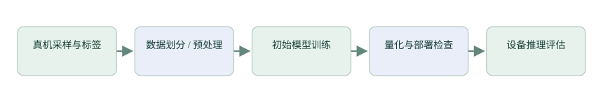

支线三：AI 数据、训练与 ST.AI 接入
从带标签真机数据到固定输入契约，再完成量化、部署一致性检查与模型接口接入。
知识：先定义输入与要回答的问题
活动识别输入可是一段三轴加速度与三轴角速度，输出是类别或概率；关键词模型输入可来自一段音频的 MFCC；睡眠模型又有不同的时间尺度。每种任务先定义输入单位、采样率、通道顺序、窗口长度、标签和延迟要求。用“准确率高”代替这些契约，模型很容易在设备端失效。

独立实验：先验证数据契约
- 为一个小任务采集带标签样本，记录设备、人员、场次、佩戴方式、采样配置和原始时间戳。
- 先按人员/场次划分训练、验证、测试，再滑窗；不能让高度重叠的同一条记录同时出现在训练和测试。
- 仅在训练集估计归一化参数，其他集合复用；保存单位、量程和缺失数据处理策略。
- 先建立简单基线，观察混淆矩阵、召回率、误报和推理延迟，再训练更复杂模型。
训练工具中的“一个样本”可能是一段 512 点窗口。单个原始采样点、一个滑窗和一次推理是不同计数单位；采集与评估记录必须说清楚。
量化：整数只是编码，缩放仍有物理意义
仿射量化近似满足 real=scale×(q−zero_point)，反向 q≈round(real/scale)+zero_point，并裁剪到实际 dtype 范围。scale、zero_point、输入形状和通道布局来自模型元数据，不能因代码参数类型是 uint8_t 就认定网络逻辑输入一定是无符号量。
Python 教学函数 · 实际舍入细节需与模型工具逐元素验证
import numpy as np
def quantize_i8(x, scale, zero_point):
if scale <= 0:
raise ValueError('scale must be positive')
q = np.rint(np.asarray(x) / scale + zero_point)
return np.clip(q, -128, 127).astype(np.int8)
# 仅用于明确为 int8 的模型；参数从实际导出元数据读取。
# 若运行时接口用原始字节指针，仍需保持 int8 的位模式。量化校准数据要覆盖真实输入分布。随机输入适合检查接口数值一致性，不能证明真实任务的泛化效果。
ST.AI 工具链：分析、验证、导出与接入
| 阶段 | 输出 | 需要检查 |
|---|---|---|
| Analyze | 算子、参数、MACC、RAM/Flash 等报告 | 目标、算子支持与模型内存是否满足 |
| Validate | 参考模型与部署后输出比较 | 真实样本的一致性与容许误差 |
| 模型代码导出 | 网络接口、权重、上下文与激活池需求 | 名称、对齐、库版本、输出目录 |
| 固件接入 | 初始化 → 绑定权重/激活 → 设置输入 → 推理 → 读取输出 | 错误码、缓冲生命周期、最大耗时 |
工具入口参考 · 命令示例不在教程构建过程中执行
stedgeai --help
stedgeai analyze --help
stedgeai validate --help
# 安装版本确认后，在独立模型工作区按帮助传入模型和数据。
# 不向手表工程运行 CubeMX Generate Code 或自动替换网络。不同安装版本可能使用 STM32Cube.AI、ST Edge AI Core 或相应 CLI 名称。教程以现有 stai_* 接口和仓库文件为落点；具体选项以安装版本帮助与官方文档为准。模型导出和 CubeMX 重生成整套外设工程是不同操作，都应在明确输出位置后审查差异。
项目实践：追踪真正执行的网络
读 firmware/stm32/AI/har_model.c：har_network_init → set_weights → set_activations → get_inputs → run → get_outputs。静态上下文和激活池需要正确对齐，多个模型不能在未经协调时复用正在使用的内存。当前 embedding 提取在 firmware/stm32/AI/har_embedding.c 监听特定节点回调并复制 128 维特征；重新导出后节点 ID、布局和偏移可能变化，必须重查，不能只替换权重。
HAR、KWS、睡眠和心率模块的接口见 firmware/stm32/AI/README.md。当前睡眠是 280 维二分类，不应套用历史三分类说明。
验收：三份结果分别记录
- 同一批原始样本经过训练端与 C 端预处理，比较逐通道数值和窗口边界。
- 比较模型输出一致性，记录量化前后任务指标，不能只看工具通过。
- 真机测每次推理的最大耗时、RAM 峰值、采样丢帧以及佩戴场景效果。
检查理解
参考与继续阅读
参考用于核对概念和接口；不同系列、库版本与开发板的参数不可直接互换。课程按本仓库现状说明项目，完整资料索引见 来源与版本。